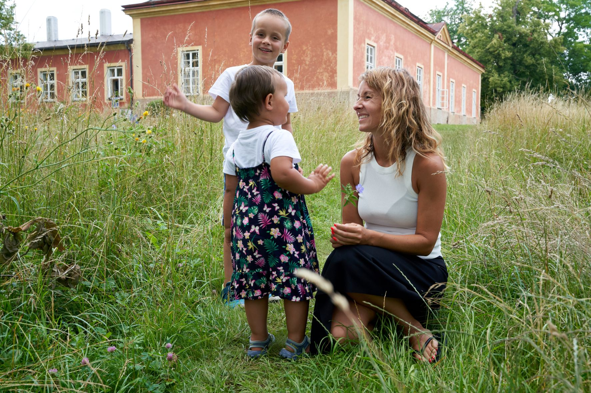

O mně
Téma zdraví v kontextu rovnováhy těla, mysli a duše se stalo před několika lety mou vášní. Dlouhou dobu jsem čerpala teoretické informace, které se opírají o celou řadu odborné literatury, která je dnes již podložena řadou vědeckých studií. Potřebovala jsem vše nejprve pochopit skrze racionální uvažování. Postupně jsem přirozeně zakomponovala tyto poznatky, které ve mně silně rezonovaly, do svého života.
Můj život se od základů proměnil. Umění žít svůj život vědomě a bez limitů se stalo mou životní cestou. Cestou poznání, která nemá hranice.
Před 3mi lety jsem absolvovala kurz mentálního koučinku v Mindset Academy a od té doby se mu věnuji. V té době mě hodně zaujala vývojová psychologie a to především v souvislosti s mentálním nastavením člověka, vliv výchovy na psychiku, vznik traumatu apod. Hledala jsem metodiku, která by pomáhala dětem už od raného věku posilovat jejich mentální odolnost a objevila jsem metodu extraokulárního vidění. Stala jsem lektorkou této metodiky a vnímám ji jako nezbytný základ pro zdravý mentální, emocionální a duševní vývoj dítěte. Metodika naučila mnoho i mě samotnou a je obrovským přínosem pro můj vztah s mými dětmi. V čase jsem doplnila svou praxi o dvě terapeutické metody – Emoční kód a Access Bars. Tyto metody prohlubují možnost propojit se s nitrem člověka a to především s jeho nevědomou částí.
V současné době studuji celostní medicínu na škole Kamaté.
Služby pro dospělé
MENTÁLNÍ KOUČINK
Naše mysl je dobrým sluhou, ale špatným pánem. Může se stát naším úžasným přítelem, ale i nepřítelem. Záleží na nás. Mentální koučink Vás naučí žít svůj život vědomě a bez limitů.
Jak probíhá sezení?
S klienty pracuji individuálně na základě jejich mentálního a emočního nastavení a hlavně záměru, s kterým přicházejí.
Základními pilíři jsou následující kroky:
- INTROSPEKCE – JAKÝ ŽIVOT ŽIJU versus JAKÝ ŽIVOT CHCI ŽÍT
Identifikace destruktivních přesvědčení, vzorců chování a emocionální zátěže, které zásadně ovlivňují a limitují náš život.
- PŘÍTOMNOSTPro mentální a emocionální rovnováhu je zásadní ZPŘÍTOMŇOVÁNÍ –> ztišit mysl, vnímat přítomný okamžik a být ve stavu rovnováhy těla, mysli a duše. Jedná se o stav, kdy srdce a mozek je v koherenci.
- MYSL Základním cílem mentálního koučinku je OSVOJENÍ TECHNIKY OVLÁDÁNÍ MYSLI. Osvojením schopnosti ovládnout své myšlenky a současně i emoce - > TVOŘÍME BUDOUCNOST DLE SVÝCH PŘEDSTAV.
Cíle MENTÁLNÍHO KOUČINKU:
- osvojení techniky ovládání mysli, emocí
- zvýšení psychické (mentální a emoční) odolnosti
- odstranění vnitřních blop>Pro mentální a emocionální rovnováhu je zásadní ZPŘÍTOMŇOVÁNÍ –> ztišit mysl, vnímat přítomný okamžik a být ve stavu rovnováhy těla, mysli a duše. Jedná se o stav, kdy srdce a mozek je v kohereků, které nás limitují
- odbourání strachů
- zvládání stresu
- orientace na přítomný okamžik – prohloubení koncentrace
- posilování sebeVĚDOMÍ a sebeDŮVĚRY
- růstové nastavení mysli
- vědomé vyhodnocování životních situací
TERAPIE EMOČNÍHO KÓDOVÁNÍ
Emoční kód je metoda, která se zabývá odblokováním emočních traumat, která mohou mít zásadní vliv na zdraví těla i duše. V rámci deaktivace emočního napětí v těle, se klient zbavuje psychických i fyzických zátěží, které mohou zásadně ovlivňovat jeho život.
Testování svalového napětí (kineziologie) bylo vyvinuto v 60. letech Dr. Georgem Goodheartem a je dodnes hojně využíváno.
Emoční kód pomáhá navracet životní energii do rovnováhy, což je zásadní pro tělesné, mentální a emoční zdraví.
Autorem metody emočního kódu je holistický lékař Dr. Bradley Nealson.
Jak probíhá terapie?
Nejprve si s klientem stanovíme záměr, s kterým do terapie přichází. Pomocí jednoduchého svalového testu identifikuji klíčové momenty v životě klienta. Mozek reaguje na otázku stažením nebo uvolněním svalů. Záporná emoce svaly oslabuje, kladná naopak zpevní. Tímto způsobem získám potřebné informace, které mohou odhalit emocionální prožitky uložené hluboko v podvědomí.
Cíle EMOČNÍHO KÓDOVÁNÍ:
- Uvolnění uvězněných emočních zátěží a traumat
- Zpracování destruktivních podvědomých vzorců chování
- Odstranění psychických problémů – depresí, úzkostí, frustrací
- Odstranění fóbií
- Odstranění zdravotních komplikací
- Posílení psychické i fyzické odolnosti, koncentrace a sebejistoty
Nezpracované emoce nám mohou bránit žít autenticky v řadě oblastí našeho života. V rámci emočního dekódování se opět dostáváme do fyzické, mentální a emoční stability.
TERAPIE ACCESS BARS
Technika Access Bars byla představena Gary Douglasem v roce 1990.
Skrz a kolem hlavy se pohybuje 32 energetických pruhů. Tyto pruhy se spojují v konkrétních "bars-místech" a korelují do různých oblastí a aspektů života. Technikou Access Bars se pomocí dotyků těchto bodů uvolňuje elektromagnetický náboj všech myšlenek, představ, postojů, rozhodnutí a domněnek, které nás limitují v určité oblasti života.
Jakákoliv omezení, která jste si v životě vytvořili, jsou napojena na vaše myšlenky, představy, postoje, rozhodnutí a přesvědčení o nich. Prostřednictvím terapie se dostáváte do stavu fyzické a psychické rovnováhy.
Jak probíhá terapie?
Lehnete si na lehátko, zakryjete se teplou dekou, zavřete si oči, uklidníte mysl a uvolníte se. Díky tomu se rychle dostanete do stavu hluboké relaxace. Mozkové vlny se zpomalí, tělo během terapie uvolňuje emoce, omezení a bloky, zastaralé vzorce chování a myšlení, otevírá se vědomí, uvolňují se myšlenky s negativním nábojem. Dostáváte se do stavu fyzické i psychické rovnováhy.
Terapie je vhodná i pro děti.
Cíle ACCESS BARS:
- Odstranění fyzických bolestí těla
- Odstranění projevů nemoci – př.migrény, alergie, astma, ekzémy, nespavost
- Nastartování samoléčebných procesů v těle, zrychlení hojení a rehabilitace po lékařských zákrocích či úrazech
- Uvolnění stresu a napětí
- Odbourání únavy a vyčerpanosti
- Odstranění psychických zátěží – př.deprese, úzkosti, strachy
- Snížení hyperaktivity u dětí
- Celkové vyrovnání emočních a mentálních disbalanců
- Vhodná pro autisty a lidi s Alzheimerovou chorobou
Služby pro děti

KURZ EXTRAOKULÁRNÍHO VIDĚNÍ (EOV)
Extraokulární vidění je KURZ ROZVOJE MYSLI dětí, jehož cílem je naučit děti pracovat se svou myslí tak, aby byla otevřená, vědomá a nelimitovaná. Děti se v kurzu učí rozšiřovat své vědomí, pracovat se svými strachy, obavami a problémy. Poznávají svou osobnost, učí se využívat své silné stránky a pracovat s těmi slabšími. Učí se poznat a chápat sebe, vnímat a komunikovat své pocity a potřeby, pojmenovávat své emoce a pracovat s nimi. Provádějí meditační cvičení a učí se pracovat s dechem.
Primárním cílem kurz je, aby děti byly šťastné, spokojené, kreativní a hlavně SAMI SEBOU.
Součástí kurzu je aktivace vnitřního zraku. Většina dětí, převážně ve věku 7-10 let, jsou schopny s páskou přes oči vidět. Je to krásná ukázka toho, jak nelimitovanou mysl malé děti ještě mají. Starší děti, stejně jako dospělí, podléhají často kritickému myšlení, takže vnitřní zrak většinou nezaktivují, nicméně vše ostatní se za hranice dosavadních možností posunout dá.
Kurz je vhodný pro děti od 7 let.
Jak probíhá kurz?
Program kurzu je sestaven z deseti (po týdnu) navazujících individuálních lekcí. Každá lekce má své téma, které rozvíjíme nejdříve s dítětem a posléze s rodiči.
Jednotlivé lekce nabízí vhledy do podvědomí dítěte a odkrývají klíčové oblasti, které je potřeba v životě dítěte optimalizovat. Získáváme tak naprosto unikátní pohled dítěte na jednotlivá témata lekcí. Na základě těchto výstupů předávám rodičům doporučení.
Práce s rodiči je stěžejní. Pakliže přicházíte do kurzu se záměrem něco změnit (vztah s dítětem, komunikaci, výbušné emoce, strachy, poruchu pozornosti, atd.) je nutné provést změnu a vytvořit dítěti zdravý prostor, kde může být samo sebou a šťastné. Rodiče dostávají doporučení na změny, které je potřeba uskutečnit.
Kurz EOV si oddřou převážně rodiče a to především prací na sobě :-) .
Metoda EOV vede děti (a společně s nimi i rodiče) do jejich nitra -> učí je vnímat své pocity a potřeby, naslouchat své intuici a žít v souladu se sebou samým. Otevírá neomezené možnosti, což posiluje zejména sebeVĚDOMÍ, sebeDŮVĚRU a nejen díky tomu vede k hodnotnějšímu a radostnějšímu životu celé rodiny.
Absolutní přínosem kurzu bývá účast obou rodičů.
Cíle kurzu EOV:
- Posílení psychické odolnosti
- Zpracování traumat
- Posílení koncentrace a sebejistoty, sebedůvěry a sebevědomí
- Zpracování traumat
- Posílení vnitřní motivace a přirozeného vývoje dítěte
- Posílení komunikačních schopností a sociálních vazeb
- Rozvoj intuice, kreativity a individuálních dovedností dítěte
- Pochopení odpovědnosti k sobě, k druhým a k životnímu prostředí
- Samostatnost
INDIVIDUÁLNÍ NAVAZUJÍCÍ LEKCE EOV
Pokud prošlo Vaše dítě kurzem EOV a rádo by pokračovalo dál, je možné navštěvovat individuální lekce.
Co děti na individuálních lekcích čeká?
- EOV - extraokulární vidění a práce s maskou
- rozvoj intuice
- pohybové aktivity s maskou
- práce s emocemi
- trénink mysli
- meditace
- relaxace
- mnoho zábavných her
- spoustu legrace a zábavy
Po předchozí domluvě je možná konzultace s rodiči
Délka 1 lekce je 60 minut.
SKUPINOVÉ LEKCE EOV
Pokud prošlo Vaše dítě kurzem EOV a rádo by pokračovalo dál, je možné navštěvovat skupinové lekce (2-5dětí.)
Co děti na skupinových lekcích čeká?
- EOV - extraokulární vidění a práce s maskou
- rozvoj intuice
- pohybové aktivity s maskou
- práce s emocemi
- trénink mysli
- meditace
- relaxace
- mnoho zábavných her
- spoustu legrace a zábavy
Po předchozí domluvě je možná konzultace s rodiči
Délka 1 lekce je 60 minut.